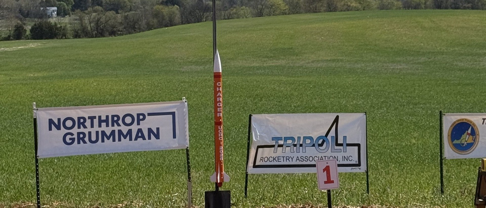

The event asks for a rocket that puts a custom built sensor payload into a five hundred foot window, drops it at apogee, sheds its nose cone partway down, and streams five channels of telemetry to a handheld ground station the whole way to the ground. We built CHARGER, and it won.
There was no rocket team at Union College when I started. I founded it, ran it as captain and chief engineer, trained new members through build labs, owned NAR and Tripoli safety compliance for high power launches, and grew the budget by seven hundred percent by writing funding proposals. The team was chartered as an official section of the National Association of Rocketry.
The win is published by Union College and by the competition organizer, so it does not need taking on trust.
Deployable Sensor Payload is not an altitude race. It is a systems problem with a narrow flight envelope around it. The rocket flies a commercial G motor to between seven hundred and twelve hundred feet, drops the payload at apogee, and at seventy five percent of peak altitude the payload lets go of the nose cone, which then has to reach the ground gently on its own.
With the nose cone gone the payload exposes a camera and films the ground until it lands. Throughout, from the moment it goes on the pad, it transmits air pressure, altitude, acceleration, temperature and rotation rate to a ground station that has to plot all of it live and derive the descent rate as it happens.
The rubric tells you what the event actually cares about. The flight is worth two hundred and fifteen points plus a tenth of a point per foot above seven hundred, and almost all of it is the data path rather than the rocket.
Flight points are added to the design review scores rather than compared against them. A preliminary review is due in December and a critical review in March, both presented live to judges and both scored. You can fly a perfect mission in April and still lose to a team that wrote better documents in December.
That reframes the whole year. Radio and antenna trades, a power budget, a software state list, flight simulations, mass with the motor installed: all of it is work the judges expect to see written down months before anything flies, and all of it is scored by the same people twice before launch day. The review deck is not a report on the engineering. It is part of the engineering.
Thirty seven inches, single stage, 2.63 inches across, three trapezoidal balsa fins on a cardboard body tube. Stability margin 1.80 calibres, which is the number that decides whether a rocket flies straight or weathercocks into the wind, and it comes from where the centre of pressure sits relative to the centre of gravity at 22 inches.
The body tube is cardboard on purpose, and it is the decision on this rocket I would defend hardest. The payload has to transmit five channels of telemetry continuously from the pad to the ground. Wrap that radio in a carbon fibre tube, which is the material a rocket team reaches for when it wants to look serious, and you have built a Faraday cage around your own antenna. Cardboard is transparent to 2.4 GHz. The airframe material was chosen by the radio, not by the structures.
An Aerotech G77R-7 at a thrust to weight ratio of 8.17, with a G79 held as backup at 7.40. Simulated apogee 1,033 feet, which sits in the middle of the seven hundred to twelve hundred window rather than at an edge, because the edge of a window is where a hot motor or a cold morning costs you the whole flight. Descent 13.8 feet per second under a 48 inch ripstop nylon canopy, against a limit of 15.
The motor retainer did not exist at the preliminary review. The rules do not accept a friction fit, so a motor has to be held by something that cannot back out under thrust, and I designed a screw-on cap for it. The motor changed too, from a G80T to the G77R-7, once the mass budget settled and the simulation had a real airframe to fly rather than an estimate.
The second one is the interesting one. This rocket carries a commercial altimeter and does not use it for recovery. Every ejection charge is fired by the team's own board reading its own barometric sensor, because the event bans commercial flight computers in the payload, and once you have built an altimeter you have to trust it with the parachute. The commercial unit rides along for one purpose: so a judge can read peak altitude off it after recovery, with the power still on.
The shock cord attachment carries the whole rocket at the instant the parachute opens. Peak simulated acceleration 24.4 feet per second squared on a 2.2 pound rocket is 19 pounds of force through an M3 screw with 0.11 square inches in shear, which is 1,641 psi against a 10,000 psi allowable. Six times margin on the one joint whose failure loses the airframe, the payload and the flight at once.

Three attempts per team, and the range closes at four in the afternoon. Nobody manages your time for you. Weather can take the whole weekend, and if it does, the awards are decided on the December and March review scores alone.
We got two clean flights away on the first day while the weather held, then put up the qualifying flight before noon on the second. One team member stands at the launch control officer's position as mission control and nothing leaves the pad until they say it does.
The event finished in this order, published by Union College on 23 April 2026 and listed by the competition organizer, so nobody has to take it on trust.
One rule shapes this competition more than any technical requirement: only team members may work on any part of it. Not the design, not the simulation, not the build, not the repairs, not the launch. Advisers can guide and mentors can review, but no adult, company or outsider can touch the rocket. There is no route to a win that goes around building the team.
So the engineering problem and the organizational problem were the same problem. The budget proposals were what made a competitive airframe affordable. The build labs were what made twelve people able to fly it. And the two design reviews were what turned a group of volunteers into a team that could say, in writing and on record, exactly how its rocket was going to work.